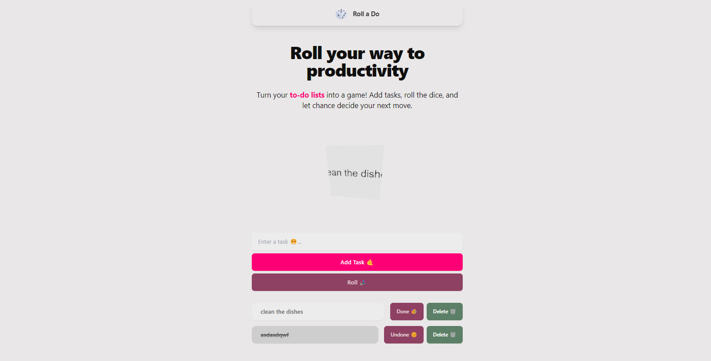
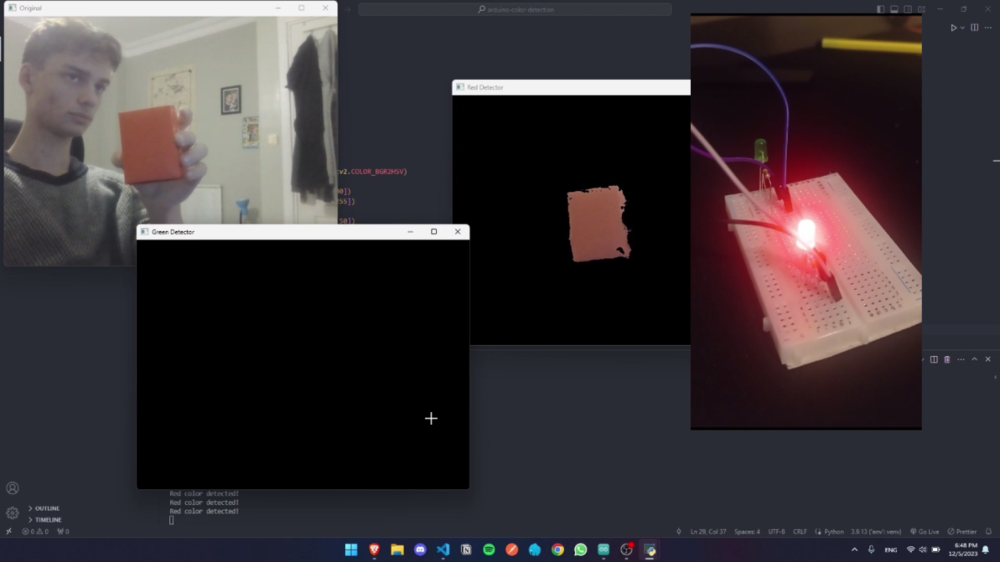
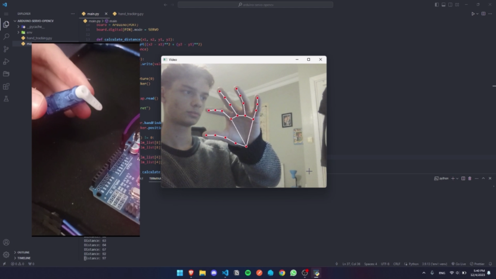
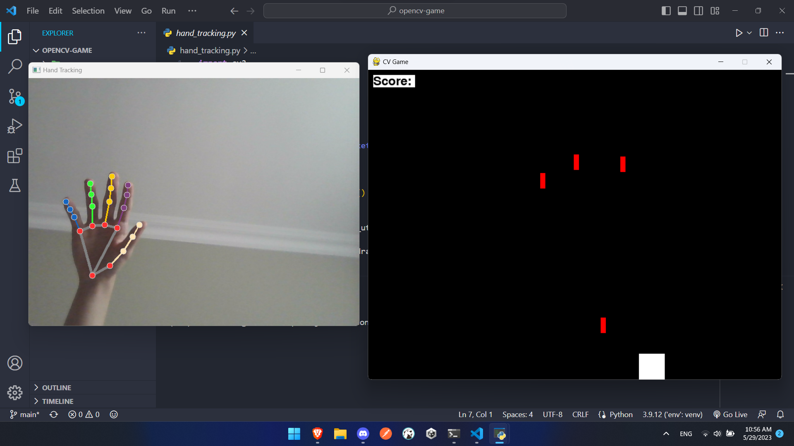

Software engineer with strong focus on backend / server-side systems, and computer vision.
Currently employed as XXX XXXXXXX at XXXXXXXXXX.
Contact me at egeokyay0@gmail.com

Software engineer with strong focus on backend / server-side systems, and computer vision.
Currently employed as XXX XXXXXXX at XXXXXXXXXX.
Contact me at egeokyay0@gmail.com
Dijimental |
Software Engineer Full-time Jun 2024 - Present Serdivan, Sakarya, Türkiye Skills: Software Architecture, Full-Stack Development, Team Leadership, Nginx, Caddy, Docker, Remix, NestJS, Go, Flutter |
Dijimental |
Software Engineering Intern Internship Jun 2023 - May 2024 Serdivan, Sakarya, Türkiye Skills: PHP, Web Scraping, Full-Stack Development, Express.js |
Serdivan Municipality File Sharing Software |

A file sharing platform for Serdivan Municipality where admins upload videos and PDFs, and track employee engagement with the content. Stack: Remix, PostgreSQL (with Prisma ORM) |
Passlock |

CLI tool to store AES encrypted key-value pairs. Stack: Go |
dijimental.com |

SEO optimized full-stack multi language website with an admin dashboard. Stack: Next.js, Tailwind, MySQL (with Prisma ORM) |
Roll a Do |

To-Do list app with a fun twist. Stack: Next.js, Tailwind, daisyUI, Three.js |
OpenCV and Arduino Color Detection |

Activating the correct LED on the breadboard using OpenCV color detection and serial communication. Stack: Arduino, Python, OpenCV |
Servo Motor Control With Hand Tracking |

Controlling the rotation of the Arduino servo motor according to the distance of your thumb and index. Stack: Arduino, Python, OpenCV, Mediapipe, pyFirmata |
Hand Tracking Game |

Python game playable with OpenCV hand tracking and moving your hand left to right. Communication made with sockets. Stack: Python, OpenCV, Mediapipe |
| Encryption Strategies for Data Security: An Analysis of Modern Practices | read |
| ADYS - Emergency Situation Communication System Report | read |